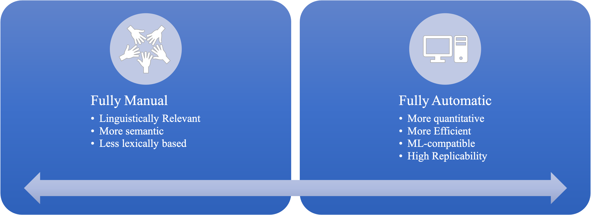

1. Machine Learning: Overview#
Contents
1.1. What is Machine Learning?#
Simply put, ML is the science of programming computers so that they can learn from data.
[Machine learning is the] field of study that gives computers the ability to learn without being explicitly programmed.
—Arthur Samuel, 1959
A computer program is said to learn from experience E with respect to some task T and some performance measure P, if its performance on T, as measured by P, improves with eexperience E.
—Tom Mitchell, 1997
1.2. Why use machine learning?#
Limitations of rules/heuristics-based systems:
Rules are hard to be exhaustively listed.
Tasks are simply too complex for rule generalization.
The rule-based deductive approach is not helpful in discovering novel things.
1.3. Types of Machine Learning#
We can categorize ML into four types according to the amount and type of supervision it gets during training:
Supervised Learning
Unsupervised Learning
Semisupervised Learning
Reinforcement Learning
Supervised Learning#
The data we feed to the ML algorithm includes the desired solutions, i.e., labels.
Classification task (e.g., spam filter): the target is a categorical label.
Regression task (e.g., car price prediction): the target is a numeric value.
Classification and regression are two sides of the coin.
We can sometimes utilize regression algorithms for classification.
A classic example is Logistic Regression.
Examples of Supervised Learning
K-Nearest Neighbors
Linear Regression
Naive Bayes
Logistic Regression
Support Vector Machines (SVMs)
Decision Trees and Random Forests
Unsupervised Learning#
The data is unlabeled. We are more interested in the underlying grouping patterns of the data.
Clustering
Anomaly/Novelty detection
Dimensionality reduction
Association learning
Examples of Unsupervised Learning
Clustering
K-means
Hierarchical Clustering
Dimensionality reduction
Principal Component Analysis
Latent Dirichlet Allocation
Semisupervised Learning#
It’s a combination of supervised and unsupervised learning.
For example, we start with unlabeled training data and use unsupervised learning to find groups. Users then label these groups with meaningful labels and then transform the task into a supervised learning.
A classific example is the photo-hosting service (e.g., face tagging).
Reinforcement Learning#
This type of learning is often used in robots.
The learning system, called an Agent, will learn based on its observation of the environment. During the learning process, the agent will select and perform actions, and get rewards or penalties in return. Through this trial-and-error process, it will figure the most optimal strategy (i.e., policy) for the target task.
A classific example is DeepMind’s AlphaGo.
1.4. Workflow for Building a Machine Learning Classifier#
In NLP, most often we deal with classification problems. In particular, we deal with supervised classifcation learning problems.
Given a dataset of texts and their corresponding labels, the objectives of the classifier are:
How can we identify particular features of language data that are salient for texts of each label?
How can we construct models of language that can be used to perform the classification automatically?
What can we learn about language from these classifiers?
A common workflow for classifier building is shown as follows:
 (Source: from NLTK Book Ch 6, Figure 6-1)
(Source: from NLTK Book Ch 6, Figure 6-1)
Most classification methods require that features be encoded using simple value types, such as booleans, numbers, and strings.
But note that just because a feature has a simple type, this does not necessarily mean that the feature’s value is simple to express or compute.
Indeed, it is even possible to use very complex and informative values, such as the output of a second supervised classifier, as features. (i.e., boosting techniques)
1.5. Feature Engineering#
What is feature engineering?#
It refers to a process to feed the extracted and preprocessed texts into a machine-learning algorithm.
It aims at capturing the characteristics of the text into a numeric vector that can be understood by the ML algorithms. (Cf. construct, operational definitions, and measurement in experimental science)
In short, it concerns how to meaningfully represent texts quantitatively, i.e., the vectorized representation of texts.
Feature Engineering for Classical ML#
Word-based frequency lists
Bag-of-words representations (TF-IDF)
Domain-specific word frequency lists (e.g., Sentiment Dictionary)
Hand-crafted features based on domain-specific knowledge
Feature Engineering for DL#
DL directly takes the texts as inputs to the model.
The DL model is capable of learning features from the texts (e.g., embeddings)
The price is that the model is often less interpretable.
Strengths and Weakness#


1.6. Challenges of ML#
Insufficient quantity of training data
Non-representative training data
Poor quality data
Irrelevant features
Overfitting the training data
Underfitting the training data
1.7. Testing and Validating#
Hyperparameter tuning and model selection
Many ML algorithms are available.
Algorithms often come with many parameter settings.
It is usually not clear which algorithms would perform better.
Cross-validation comes to rescue.
Cross-Validation
 (Source: https://scikit-learn.org/stable/modules/cross_validation.html)
(Source: https://scikit-learn.org/stable/modules/cross_validation.html)
Cross Validation
Before testing our model on the testing dataset, we can utilize \(k\)-fold cross-validation to first evaluate our trained model within the training dataset and at the same time fine-tune the hyperparameters.
Specifically, we often split the training set into \(k\) distinct subsets called folds, and trains the model on the \({k-1}\) folds and test on the remaining 1 folds. A \(k\)-fold split allows us to do this training-testing for \(k\) times.
Based on the distribution of the evaluation scores in all \(k\) folds of datasets, we get to see the average performance of our model.
Which ML algorithm performs the rest?
Which sets of hyperparameters yield the best performance?
1.8. Machine Learning Project Checklist#
A machine learning project often involves a few important steps: [3]
Frame the problem and look at the big picture.
Get the data.
Explore the data to gain insights.
Prepare the data tp better explore the underlying data patterns to machine learning algorithms.
Explore many different models and shortlist the best ones.
Fine-tune the models amd combine them into a great solution.
Present your solution.
(Interpret the insights from the best-performing model).
Launch, monitor, and maintain your system.
1.9. References#
Géron (2023), Ch 1-2